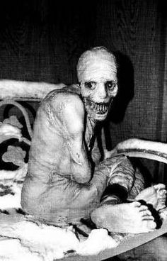

PREČO ÍSŤ SPAŤ PO VEČERNÍČKU
Michal Gogáň | Článok
Ak ste mladý človek alebo tínedžer, určite viete svoje o nočnom živote. Ostávali ste dlho hore a spali ste až do obeda druhého dňa. Pravdepodobne ste sa necítili po celonočnej párty najlepšie, ale bežne ste zaspávali o takej pol jedenástej, či dokonca o polnoci. Aj ja som bol takto nastavený, chodil som neskoro spať, lebo to bolo in. A prečo pôjdem spať skoro, však to robia deti - ja decko nie som. Všimol som si ale, že pokiaľ ostanem hore po jedenástej, akokoľvek dlho spím, som unavený. A tak som sa pred mesiacom rozhodol podniknúť experiment. Namiesto ostávania hore dlho do noci, som radšej išiel spať relatívne skoro pričom následne som si dal aj budík skoro. A tu sú výsledky.
1. Zistil som, že keď vstanem o 5.30 každý deň, môj deň pocitovo trvá ako dva dni. Neviem, či je to tým, že keď vstávam ešte len vychádza slnko alebo tým, že som si spojil šport spolu s ranným vstávaním – išiel som behať. Veľakrát sa mi stalo, že som ani nevnímal, koľko som toho v daný deň už stihol, pritom bolo len jedenásť hodín.
2. Ani mi následne nevadilo ísť spať o 21.30. Jednak som bol už unavený, lebo som vstal tak skoro, ale taktiež som si uvedomil, že čas, čo by som bol večer hore nebol využitý produktívne. Pred implementáciou tohto režimu som večery presedel s mobilom na youtube alebo som sa hral počítačové hry. Teraz som sa hrával minimálne a na youtube som nebýval až tak dlho.
3. Nebol som unavený. Toto je asi hlavný a najdôležitejší bod, nebol som unavený pri vstávaní o 5.30 a následnom behu. Aj napriek tomu, že som spal 8 niekedy 7.30, raz dokonca 6 hodín. Možno to bolo tým, že som sa tešil na to ranné vstávanie alebo na ten beh, ale boli aj dni, keď som sa musel donútiť.
Takéto boli moje pozorovania po mesiaci tohto režimu. Niektorí moji kamaráti mali poznámky, že oni sú produktívni večer, a teda musia ostať dlho hore, aby niečo spravili. Ja mám pocit, že toto je skôr výhovorka ako reálny dôvod. Ak by som niečo chcel stihnúť, tak by som to spravil v rámci času, ktorý mám. Tiež, večer je relatívny pojem, lebo napríklad ja mám večer o siedmej až ôsmej.
Ak sa vám nepáči, že bývate unavení a chcete s tým niečo spraviť, odporúčam začať so vstávaním, potom sa vám aj spať pôjde ľahšie. Tiež si nájdite aktivitu, ktorú budete robiť ráno, kým všetci spia, aby ste využili čas a nesedeli len tak hľadiac do prázdna, prípadne kompenzovali ten čas na youtube, čo vám chýba večer. Určite bude ešte jeden takýto článok, možno o mesiac možno o dva, lebo idem začať nový režim. Moja noha už je zdravá, ja už nie som chorý, a teda chcem behať pred školou. To znamená 4.30 vstávanie a 20.00 až 20.30 spanie. Akokoľvek si to nastavíte, myslite na to, že ak bývate unavení alebo sa vám zle vstáva, asi robíte niečo zle.
PS: Linda, 2 hodiny spánku nestačia, pokiaľ nechceš vyzerať takto
13. septembra 2020